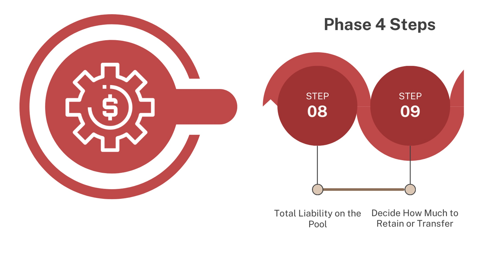
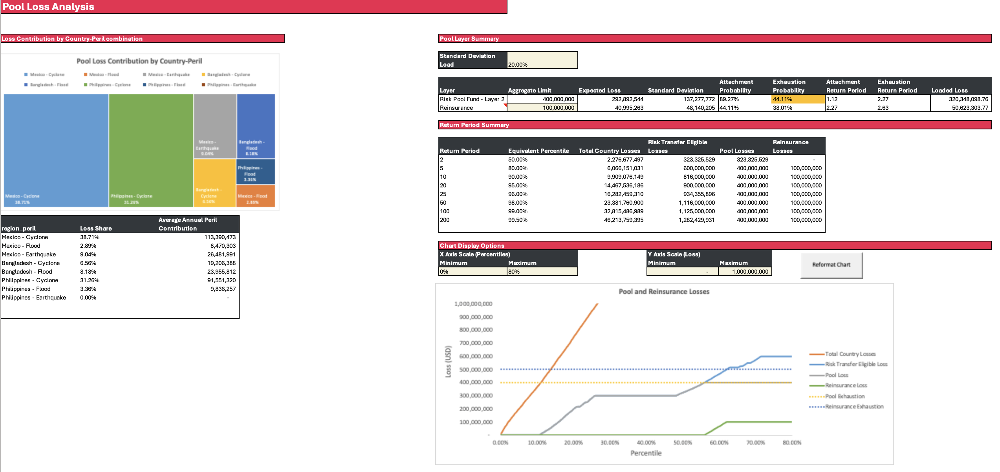
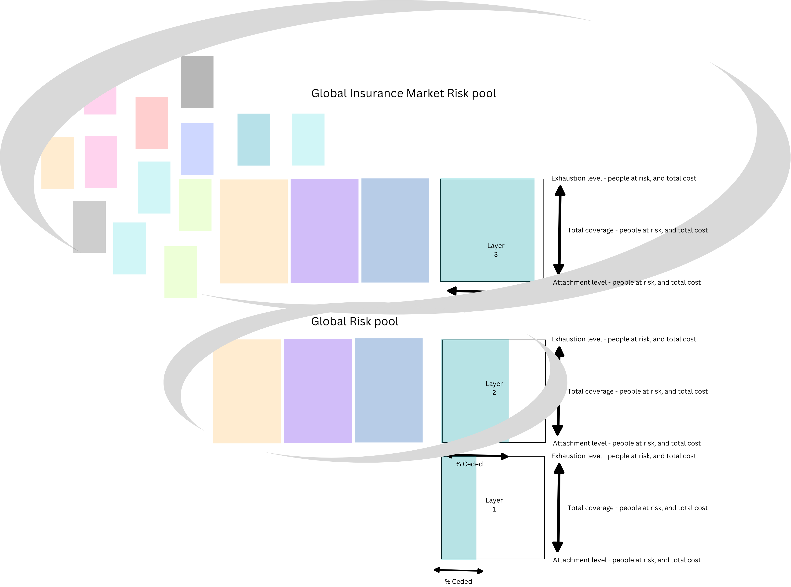
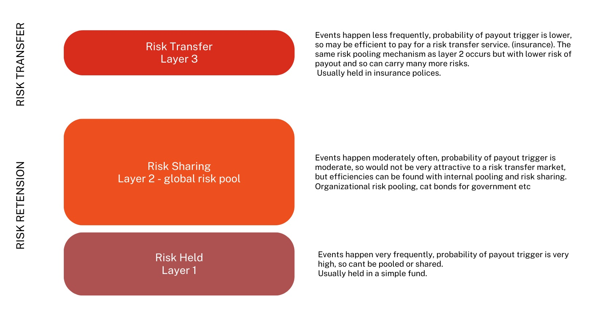
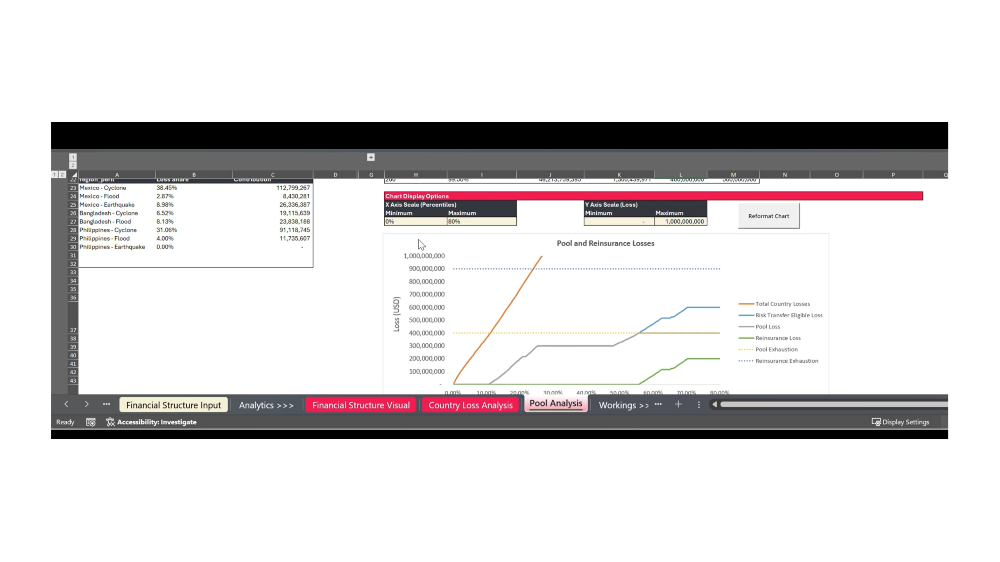

Phase 4: Emergency funding pool - financial analysis
{kind=link}

The tool has now calculated the probabilities of large volumes of scenarios of payouts from Layer 2 and combined all of the financial requirements and probabilities from the combined statistical distributions and financial structuring. You can now see the overall combined risk curve for all of the risks.
Step 8: Total Liability on the Pool
Go to Pool Analysis Tab.
The RPT shows a “combined payout” scenario when all country-risks are included in Layer 2.
The chart on the left indicates which country-perils dominate the pool’s liability, or what’s most likely to draw down the funding in payouts most heavily. You can consider the bigger the share, the heavier the risk within the pool. It is likely to drain your funding more than others. The heavier risks could be either a result of lots of funding being pre-positioned or the reinstatements on those risks. Or it could be that the frequency of the events depicted, if the attachment and exhaustion is high.
The table in cells A23 to C23 displays the percentage share of each risk in the pool and the annual average loss (or payout) for that risk.
{kind=link}

Total liability on the pool
Step 9: Decide How Much to Retain or Transfer
The graphs help us to think now about how we might structure the pool so that we can be as efficient as we can be with the funding available. This is where we bring in Layer 3 - Risk transfer. What the Risk transfer or Insurance can help us do is ensure we have access to funding for the biggest losses or payouts from layer 2, without having to hold it in layer 2.
It’s very difficult to justify in any context holding onto a very large amount of money, just in case a rare event happens, with small probabilities, when there are needs in so many other places. But we still want and need to ensure if those events do occur we have access to enough funding as best we can. However it is unlikely enough funding for all events will ever be in place fully. So instead we can pay a small amount each year for someone else to have enough funding for us to cover those events through insurance. The reason insurance works is that it is set up best if covering only the rare events, it can use these probabilities to manage its financial risk across much larger diverse global pools of risks.
{kind=link}

Schematic of a risk pool with insurance
{kind=link}

Retention and Risk transfer layers
You may see it also depicted as above
So it becomes less cost effective to transfer risk the lower the return period or higher the probability and size of coverage. The more risk is transferred and taken on by an insurance company, the higher the premium to account for that. The most uninsurable risk would be a high payout that happens frequently on the attachment. But this can be covered with layer 1 and 2 as these layers and instruments don’t need to be necessarily market profitable, but efficient financially and operationally to ensure impact and predictability.
This is at the heart of why financial layering is so useful for disaster management, it allows money for crises to flow efficiently and operationally impactfully. It can create predictability in funding which is very important for good disaster management and preparedness systems.
The Risk pool of layer 2 allows us to share the risks and probabilities of loss (payout) across the different country risks in the tool. However insurance is able to share the transferred risk across many different kinds of global risks and probabilities (not only the ones that are being covered by your organisation).
So you don’t have to hold onto the total amount of money with such a low chance of needing it all. But also ensure we have coverage if those less frequent events do happen. This is important because when money is tight, it’s very hard to justify holding lots of money for events which may not happen, especially those with a low probability. So, this type of structuring allows less to be held but still has a mechanism for the worst-case scenarios to meet the coverage.
Key Decision-Making Considerations
What level of insolvency are we willing to accept? If you are operating an insurance company, your aim is to be as fully solvent as you can be while ensuring affordable premiums. For the market, this is regulated, with having to be solvent to 99.8% (a 1-in-200 year return period). However, in the case of an emergency fund, you need to balance how safe the fund is and how to maximise its utility and employment in emergency situations. In this case, the risk appetite may be greater for emergency funds as holding onto too much funding can have significant moral and operational hazards in the context of emergency funding. A balance on how much to hold, transfer, and accept insolvency will dictate the level of funding that will likely flow out of your pool each year (annual average loss). All of the operational, governance, and technical considerations have to be considered in the round.
Do we have other means other than re-insurance to self-insure? In some cases, you may have other funds or parts of funds that you can use as your backup in those very unlikely extreme years of drawdowns beyond the amount of funding you have.. What availability and agreement you could put in place for this would need to be identified.
What are the consequences if we cannot pay the total amounts we have guaranteed to countries? This will differ with different funds. The predictability that risk financing and risk pooling bring is one of the biggest impacts and advantages in emergencies and funding mechanisms. So, it will be important to understand what level of guarantee recipients of the funding feel comfortable with and the level of risk they can accept. In some cases, you may have a legal contractual obligation, so understanding what level of guarantee and solvency you have agreed to is essential, along with clauses. Retaining funds for rarer events might be inefficient. Reinsurance (Layer 3) can transfer these “tail risks” for a premium.
Tool Guidance
Cell I6 allows you to vary the standard deviation - this is what represents the premium costs loading in the tool.
Important: The standard deviation gives a rule of thumb method for loading a premium amount. However, how each individual insurance company arrives at a premium will be different, there is no way to consistently price risk. It will depend on a huge number of factors at the time, including what else is going on in the global market risk pool and their own risk appetite and cost of capital. This is why it is important to get different quotes for coverage.
{kind=link}

All of your parameters for the pool will have been automatically generated in the table in cells I9 to P9.
You now have the option to add in layer 3 - Reinsurance of the pool. Starting in Cell I10. Here you can add in a value for the total amount of coverage you would want from reinsurance.
The total pool loss (expected payout total) is found in cell J9. The total funding needed is the total pool loss plus the standard deviation premium amount and the expected loss - this is found in P9. The same parameters are set for Layer 3 automatically.
The graph below in cell rows 29 to 44 displays the overall risk curve of the pool with all of the combined risks. The orange curve is the combined losses for all of the country risks in the pool in total. Then the grey area of the second plot line represents the losses from the pool. When the pool funding exhausts at the yellow dotted line, then the reinsurance comes in with the blue line at its attachment. The dotted blue line then cuts off with the exhaustion of the reinsurance. The green line shows the level of pay out from attachment of the insurance.
The graph can be scaled in cells H27 - L27.
Solvency: you can now see from the graph how solvent your financial structure is. The percentile where all three layers have been exhausted is the % of risk you have decided to retain that you won’t have enough funding to cover all of the potential losses (payouts). For commercial insurance their structures have to be solvent 1 in 200 year loss events as part of financial regulations for insurance companies. However this does not apply to other non commercial funding mechanisms.
Balancing priorities: When using risk financing and structuring for emergency support, it can run counter intuitively to insurance and commercial structuring. In emergency management we want to payout as much as possible when needed, insurance companies don’t want that as a business model. So if you want to be very solvent, this will reduce the amount of risk you are taking but also reduce the amount of coverage you can offer to countries’ - basically you hold together the money. If you allow for high levels of risk of insolvency, you may be able to offer higher levels of funding coverage and bigger payouts, but the risk of not having the money to meet that is much higher. A governance decision is required to decide this balance and to agree and hold the remaining risk.
Note: If you were to provide coverage to country risks they should be clearly informed of the solvency of any prepositioning they rely upon with the different layers.
The Pool recoveries table from cell H48 displays all of the granular data from the graph. This may be helpful when it comes to optimising in the final step.